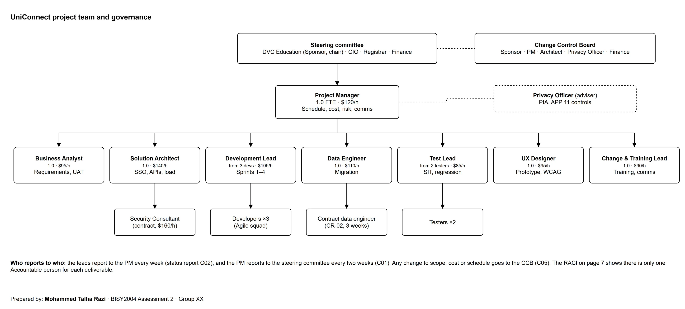
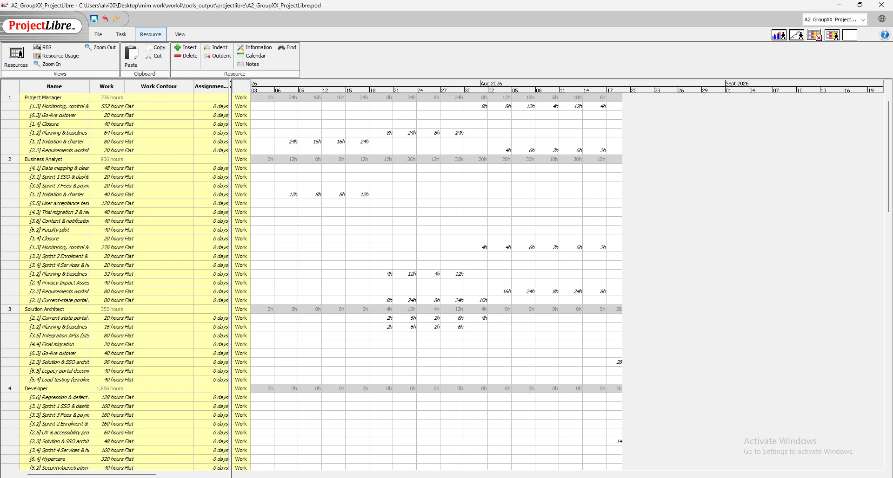
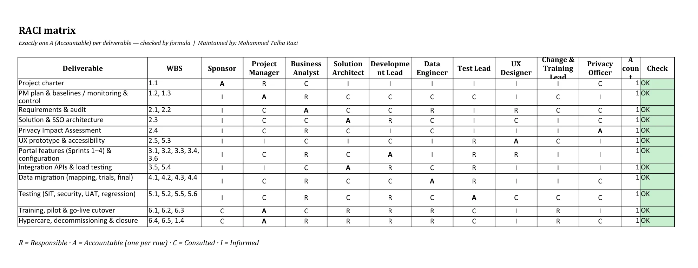

Page 7
Team & communication
Purpose: Who does the work, who's accountable, and how info gets passed around.
Team structure

diagrams/D03_team_structure.drawio (diagrams.net).Resources
| Role | FTE | Rate | Baseline hours | Baseline cost |
|---|---|---|---|---|
| Project Manager | 1 | $120/h | 776 | $93,120 |
| Business Analyst | 1 | $95/h | 928 | $88,160 |
| Solution Architect | 1 | $140/h | 336 | $47,040 |
| Developer | 3 | $105/h | 1,848 | $194,040 |
| Data Engineer | 1 | $110/h | 500 | $55,000 |
| Tester | 2 | $85/h | 932 | $79,220 |
| UX Designer | 1 | $95/h | 400 | $38,000 |
| Change & Training Lead | 1 | $90/h | 380 | $34,200 |
| Security Consultant | 1 | $160/h | 140 | $22,400 |

A2_GroupXX_ProjectLibre.pod.RACI
| Deliverable | WBS | Sponsor | Project Manager | Business Analyst | Solution Architect | Development Lead | Data Engineer | Test Lead | UX Designer | Change & Training Lead | Privacy Officer |
|---|---|---|---|---|---|---|---|---|---|---|---|
| Project charter | 1.1 | A | R | C | I | I | I | I | I | I | C |
| PM plan & baselines / monitoring & control | 1.2, 1.3 | I | A | R | C | C | C | C | I | C | I |
| Requirements & audit | 2.1, 2.2 | I | C | A | C | C | R | I | R | C | C |
| Solution & SSO architecture | 2.3 | I | C | C | A | R | C | I | C | I | C |
| Privacy Impact Assessment | 2.4 | I | C | R | C | I | C | I | I | I | A |
| UX prototype & accessibility | 2.5, 5.3 | I | I | C | I | C | I | R | A | C | I |
| Portal features (Sprints 1–4) & configuration | 3.1, 3.2, 3.3, 3.4, 3.6 | I | C | R | C | A | I | R | R | I | I |
| Integration APIs & load testing | 3.5, 5.4 | I | I | C | A | R | C | R | I | I | I |
| Data migration (mapping, trials, final) | 4.1, 4.2, 4.3, 4.4 | I | C | R | C | C | A | R | I | I | C |
| Testing (SIT, security, UAT, regression) | 5.1, 5.2, 5.5, 5.6 | I | C | R | C | R | C | A | C | C | C |
| Training, pilot & go-live cutover | 6.1, 6.2, 6.3 | C | A | C | R | R | R | C | I | R | I |
| Hypercare, decommissioning & closure | 6.4, 6.5, 1.4 | C | A | R | R | R | R | C | I | R | C |

A2_GroupXX_ProjectData.xlsx › RACI.Communication plan
| ID | Audience | Information | Method | Frequency | Owner | Feedback |
|---|---|---|---|---|---|---|
| C01 | Steering committee (DVC, CIO, Registrar, Finance) | Status dashboard, EVM, top risks, decisions needed | Meeting + dashboard PDF | Fortnightly | Project Manager | Minutes and action log |
| C02 | Sponsor, CIO, Deans, Privacy Officer | Weekly status report (RAG, SPI/CPI, issues) | Email report | Weekly (Friday) | Project Manager | Reply/queries to PM |
| C03 | Registrar's team, SRC, Accessibility Services | Sprint demo of working features | Sprint review (hybrid meeting) | Every 2 weeks | Development Lead | Backlog items raised in Trello |
| C04 | Students | What is changing, when, pilot invitations | Newsletter, portal banner, social media | Monthly; weekly from Dec | Change & Training Lead | Survey and SRC channel |
| C05 | Change Control Board | Change requests with impact analysis | CCB meeting | Fortnightly or ad hoc | Project Manager | Decision recorded in change log |
| C06 | Privacy Officer, Registrar | Migration controls, masking, reconciliation results | Privacy briefing | Before each migration run | Data Engineer | Written approval to proceed |
| C07 | LMS vendor, portal platform vendor | Integration defects, API changes, SLAs | Vendor call | Weekly | Solution Architect | Joint defect log |
| C08 | Students, staff, IT Service Desk | Go-live comms pack: how to log in, where to get help | Email, intranet, FAQs, posters | 4 weeks, 1 week and day 0 before go-live | Change & Training Lead | Help-page analytics, tickets |
| C09 | IT Service Desk, Dev, Data Engineer | Incidents, ticket trends, fixes | Stand-up (15 min) | Daily during hypercare | Project Manager | Incident log |
| C10 | TEQSA (via Registrar) | Compliance summary; material incidents only | Formal report | Quarterly / as required | Academic Registrar | Regulator correspondence |
| C11 | Faculty Deans, academic staff | Scope, dates, pilot, LMS link changes | Faculty briefing | Monthly | Project Manager | Q&A; requests routed to CCB |
Sample weekly status report (C02) — week ending 25 Sep 2026
Overall: Amber · SPI 0.91 · CPI 0.96 · % complete 24.6% (planned 27.0%)
Done this week: ran trial migration 1; Sprint 2 stories are in QA; added CR-03 (MFA) to the backlog.
Issues: ISS-01 duplicates (critical, owner Data Engineer); ISS-02 LMS token bug (vendor patch due 2 Oct).
Decisions needed: CR-02 was approved on 25 Sep. The Registrar needs to confirm the merge rules by 29 Sep.
Next week: contractor starts, cleansing mini-sprint, Sprint 3 kicks off.
Interpretation
Every deliverable has exactly one accountable role, so decisions don't fall through the cracks between teams. The comms plan covers all 14 stakeholders. When ISS-01 came up, the privacy briefing (C06) and the status report (C02) got the Registrar and Privacy Officer in the loop within two days.